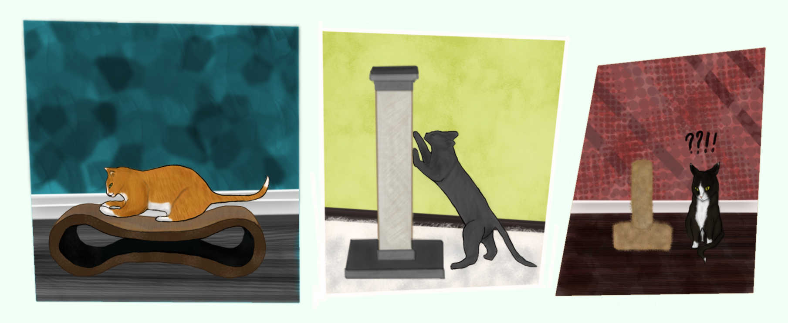

“Couches, Carpets, and Curtains, Oh My!” Inappropriate Scratching Behavior

Inappropriate scratching, oh boy. I get many calls about this one. There are many reasons why it happens and just as many ways to treat it. I will state that as with most behavioral issues I counsel on regularly, I think this is only as bad as it is not because guardians don’t understand cats or their need to scratch (although some certainly don’t.) But rather, they’re doomed from the start due to manufacturers trying to make a quick buck. Pet stores and animal product manufacturers always have people in mind, rarely the animals, be it litter boxes, scratching posts, cat trees, or water and food bowls...So many of these products are monstrosities that cats have no use for or grow out of by the time they’re four months old, but no one tells the guardians that. How are they supposed to know?
Of course, there are other instances, where people are just so terrified that they will not even comprehend the existence of a clawed cat in their home (or, in the case of landlords, on their property.) Whether this is due to their upbringing, a medical condition, some horrible one-off instance in their past where a cat got startled and scratched them or someone/something they loved dangerously, or, just due to a guardian who did absolutely nothing to curb behaviors and caused massive property damage. I get it...but none of this should be a reflection on the species themselves. All of it is avoidable, it just takes a little work. Since you have decided to be the guardian of an animal, I have to assume you’ll be up to taking on that work. Altering the anatomy of the animal is not an answer to any of these problems, either, and is incredibly inhumane. Anyway…in this post, we’re going to go over the basics of inappropriate scratching. Grab a drink, sit down, and let’s discuss.
When facing inappropriate scratching behaviors, the first questions I ask are those regarding the environment. Are you providing scratching area? Usually, I’m met with a “Yes.” At that point, I ask how many, and usually it’s “One.” or, something like: “I had this cardboard mat that he really liked but he tore it up in a matter of days and I haven’t gotten around to getting another. I also have this little post from Petco but he doesn’t seem to like it. He has a cat tree, too. He doesn't scratch on it.” So I follow with what’s probably an extremely annoying question, but, in the case of couch or doorway scratchers, probably the most important one: How tall is your scratching post? If you don’t know inches, that’s okay. Does it come to about your knee, your hip? - Almost every single time (if they have a post) the answer is “About knee” or “Mid-thigh.” Bingo.
Cats scratch for a variety of reasons. It is an instinctual and physiological need. They scratch to stretch, to self-soothe and relieve stress, to groom their nails and shed old sheathes, to mark their scent and provide themselves comfort in their environment. Consider that first purpose now. Your cat is stretching; they need to be able to support their body weight, they need to be able to position themselves comfortably to do so. When you go out to the pet store and pick up an 18″ scratching post for a cat who is 11 pounds and 30″ long at full extension, that post is useless. It’s going to tip over before they’ve applied the necessary weight, and they cannot position effectively. That nice sturdy couch will be far more appealing now! It’s not to spite you, it’s simply because you haven’t fulfilled their need. So, what do you do? This is a market issue, for sure. Most pet stores don’t carry the appropriate sized scratching posts in-store and unfortunately, for most cats a tree will not be an appropriate substitute. With all of those perches and weird angles, there’s just not enough uninterrupted space, it’s just not as comfortable for that purpose. For scratchers, I recommend turning to the internet and looking for a post at least 32″ tall. I recommend this for a vertical scratching post! It's my favorite.
But what about the carpet scratchers? "I already have a post and he just won’t use it!” The first questions I’d ask are: Do you have a horizontal post? Is that post a cardboard slab or a scratcher bed? In my experience, cats are a little less picky about horizontal posts and can acclimate to smaller posts, but the same still stands if you want to ensure efficacy! The larger, the better. I still shoot for 32″+ Even for cardboard scratchers, I've noticed the bigger they are, the longer they last! I had a $40 infinity scratcher that lasted around two years - before I broke it resting my legs on it! I'd recommend this one, personally!
If you still have issues getting them acclimated to their posts, your issue may be the substrate. Your cat may only like the feeling of carpet on their feet, for a doorway scratcher, maybe wood instead. In these instances, it helps to be creative. Most cats, in my experience have no issues with sisal rope or cardboard, but there are outliers. For the carpet-only kiddos, there are carpet posts out there. If you’ve already purchased sisal posts and don't want to sell or give them away, you can head out to a carpet store and see if they can offer you samples. You can apply those to your scratching post! What about wood? Again, there are some wood posts out there, but they’re not the easiest to come by. Lucky for you, they’d be the easiest to make! If you’re not against bringing some outside in, people have made awesome DIY cat trees from fallen branches, slabs of tree trunk, or have even taken to having a smaller potted tree indoors specifically for their cat. You can also purchase slabs of wood and utilize them however you like. Creativity goes a long way.
Similar to this, sometimes location is key. Very occasionally there are cats that truly will not be deterred from their favorite spot, no matter what you use or how many great scratchers you add. I once had a cat like this - he was particularly attached to one specific doorway in our home. Blocking it didn't help, another scratcher in the room didn't help, not even double-sided tape worked! What we decided to do is - like above, attach carpet samples or stair mats to the doorway and replace them as needed. This kept the doorway from getting damaged while keeping him happy! Win-win! Sometimes, compromise comes into play. There is no "right" way to do this - but there are plenty of wrong ones! If you find something that works and isn't harmful, go for it!
If you want a 1-2 punch, in my opinion the single appropriate deterrent is double-sided tape. Now, applying regular double-sided tape would take an eternity. Even the “sticky paws” product is pretty small for most purposes. Online you can pick up larger strips of double-sided tape that will cover the entire side of a couch if needed, in bulk packs too! Amazon has a ton of options, I can’t speak as to whether any are better than others, but here is an example. This usually only needs to be used for about 2 weeks, after that the cats usually don’t return. to the spot as they've learned it's always sticky and gross there!
Why don’t I recommend other deterrents? They’re ineffective and potentially dangerous, for you and your cat! Beyond this, punishing a natural behavior like scratching just isn't a good idea. They’re not technically doing anything wrong, they’re just doing it in the wrong place - they don't understand that you're punishing them for the latter, they just know they're being punished for scratching. Redirect, don’t punish!
Here are some rules regarding aversives and deterrents:
- 1. Any deterrent or aversive MUST be consistent. If you can’t spray your cat every single time it goes to scratch, you’re not teaching it anything other than that you’re a scary monster that randomly sprays it with water.
- 2. Aversives/Deterrents should never lead back to the human. Loud noises, spray bottles, hitting – all of these things run the risk of causing redirected aggression or further behavioral problems such as anxiety-ridden litter box avoidance. Spray bottles are for plants. Put them down.
- 3. Aversives/Deterrents must be well-timed. If you hear the scratching but are only able to get into the room 30 seconds after the cat has stopped and decide that “time outs” are your “punishment,” the time has already passed. The negative stimulus needs to be instantaneous. (Time out's aren't effective either. Too many actions in-between that can be reinforcing, and too much time has passed since the behavior for the cat to associate it with the problem behavior!)
Why do you need to provide posts if you can just train them not to scratch your funiture? Well, first and foremost, you decided to be a guardian to this cat and cats have needs just like we do - you're the one who is responsible for fulfilling them. Point blank. Let's put it this way. You'd get by without your bed and your shower. You’d sleep worse, your performance might suffer at work, you might be short with people. You might not be as groomed as you usually are, but you’d find ways to get around. Your cat might stop scratching inappropriately and get by, but they may develop stress disorders and skin hypersensitivity due to not having any outlets for scratching behavior. They may bite when you try to pet them, overgroom or barber, develop idiopathic urinary issues. Who knows. The scratching stopped though, right? As I said before, it is a necessity. You can surrender a few feet in your home to meet their needs, even if you have to get creative to make everything work. There are even door panels, corner mounts. Heck, if space isn't the issue - you could even get them their own couch off the side of the road - I've done it! They knew which one they could scratch and which they couldn't.
With every no, you need to provide a yes. This isn't just for cats, but all species, even humans! You don’t just leave anyone with no options. Tell them what they can't do, but give them alternatives. Teach incompatible behaviors, or redirect to other places and make those places the coolest ones to be. Cover the new scratching post in catnip and treats, give them lots of love every time they’re near it/use it. If play is their love language, engage them with play near it. Whatever it is, make the areas near scratching posts the fun spots. Don’t make the no-no spots scary, fear is ill-advised. Instead, leave them super uninteresting. Nothing great happens there, all the good stuff is where you want them! The party place will take their preference before long.
For the climbers, cat trees, window spaces, and as many vertical spaces as possible will do the trick! You could put up shelving, there are companies that make shelves specifically for cats - but you can make your own or use regular shelves just as well, so long as they can support enough weight. If that's not an option, try rearranging your furniture in a way so the cat can get around the room/house without touching the floor. They like being up high - it's a great confidence boost! If you provide them appropriate means to do so, they should shy away from the inappropriate ones. Double-sided tape can be used for curtains and even blinds as well if you choose to use deterrents. I personally cannot wait to have a home that I can turn into an absolute playground for my kiddos! There are so many incredible ideas out there.
Let’s delve deeper into enrichment and stress. A cat might start showing destructive behaviors and increased scratching due to stress, and stress can be any form of excess energy, even play energy. So, play with your cats! Really play with them, don’t just kick that ball on the floor to catch their attention so they’ll handle it themselves, don’t just lazily flop that wand around while you zone out to that new Netflix original. Really get involved - get them moving! Get them using their minds and bodies in an actual hunt, and tire them out. Burn energy, don’t stop the first time they seem to appear "done," keep trying. They’ll likely start back up a few times before they truly are. You want a refusal to get back up, maybe a little panting by the end of it. Have a training session! (Check out this youtube channel for some ideas!) Put out foraging activities, try "cat TV!" Anything...keep them mentally and physicall busy to prevent issues and bond with them. Think about stressors, too. I’d once counseled a woman who was really annoyed that her cat would scratch holes in the carpet by the door when it was locked in a room at night and she couldn’t understand why. When asked why it was being locked in a room, it was simply because they didn’t want the cat to be lonely in the house overnight and wanted to keep it in the room with them as they slept. We had to discuss that the cat was smart enough to find them if it felt it needed them, and the scratching was a sign that being locked up was a serious stressor for the cat and it wanted out. It’s important to remember when problems arise to always take a step back and look at the big picture rather than getting too caught up on the issue itself, because it's easy to get blinded.
I won't spend much time on injury to humans - we'll likely cover that in another post. More often than not - as much as we don't like to hear this, if cats are scratching you, it's probably your fault. It's either aggressing for a reason, or you're handling it improperly. There are other situations, but, this is what's most typical. With all of this said, there are many, many remedies to inappropriate scratching behavior, and many reasons for it. What's written here isn't even every remedy or reason! These are simply the biggest errors, reasons, and remedies I encounter regularly.
I want to close with a note on declawing. Declawing is not the answer to inappropriate scratching, even if the above fails there is much more that can be done. When cats exhibit a problem behavior they are communicating, for us humans, we automatically think that in this case it’s to do with the desire to scratch, or that they’re being spiteful. But it could be any manner of stressors, it could even be pain! It’s self-soothing, after all. Amputation is not a treatment - for any behavioral problem. You amputate a limb when there is a medical issue with that limb, period. That's it. There is always an alternative.
I hope this was helpful! I know a list format is what most people look for, but I’m I like to be more descriptive and conversational. I hope that resonates with someone out there. Stay tuned for our next post! And as always, feel free to leave any input over on our Facebook page, I’d love to make this a community conversation! Until next time.
-Meg